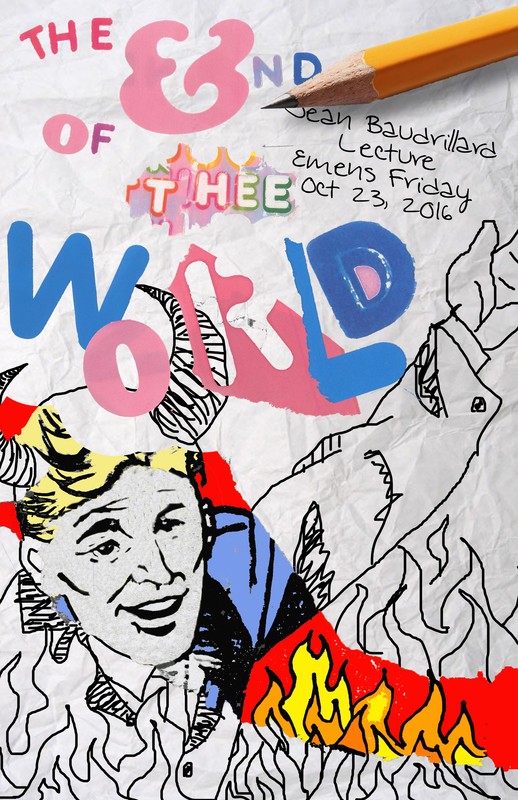
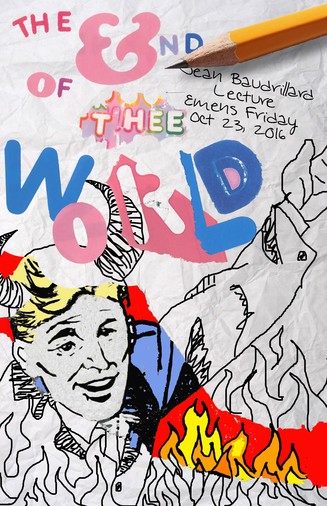
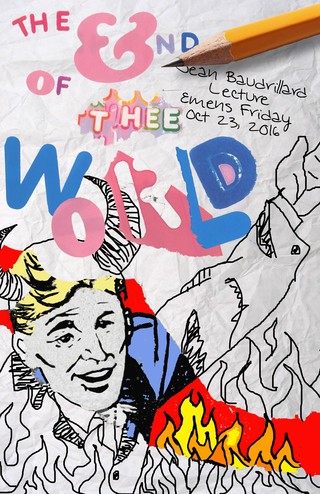

The End of the World
The End of the World is a series of event posters I designed during my Sophomore year. I used alternative techniques such as scanned imagery and objects (find the chocolate wrapper).

 

The End of the World is a series of event posters I designed during my Sophomore year. I used alternative techniques such as scanned imagery and objects (find the chocolate wrapper).
